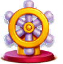
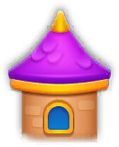
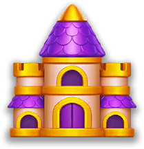

Trang chủ › Thể loại: Tiến trình
Thể loại: Tiến trình
23 trang

Cơ chế đổ màu (Bottle Sort)
Lõi gameplay: tap chai nguồn rồi chai đích, đổ nước cùng màu cho tới khi mọi chai xếp xong.
🔓 Có từ level 1
20 use case · 33 config
Snitch (Snitch Hunt)
Thắng 10 level để kích hoạt bầy Snitch bay vào ván, lật ô ẩn hoặc phá vật cản giúp người chơi.
🔓 Level 290 (SnitchConfigModel.FirstLevelToShow, client default), IsEnabled mặc định false
18 use case · 24 config
Super Charger
Trợ thủ nạp dần trong ván, khi đầy sẽ tự sắp xếp tối ưu nhiều chai hoặc tạo một chai mini đặc biệt.
🔓 Level 5 (FirstLevelToShow; nếu cấu hình < 5 thì code dùng 10), IsEnabled mặc định false
19 use case · 35 config
Vòng đời màn chơi (LevelFlow)
Khung điều khiển một lượt chơi: từ nút Play tới các nhánh thắng, thua, kẹt, thoát và chuỗi popup trở về Home.
🔓 Có từ level 1, không có điều kiện
20 use case · 72 config
Vật cản & cơ chế đặc biệt
Hơn 25 loại vật cản gắn lên chai hoặc phủ nhóm chai, mở rộng luật water-sort cơ bản của Magic Sort.
🔓 Theo thiết kế level; Curtain từ level 20, Clay từ level 60, Plaster từ level 110
26 use case · 36 config
Hướng dẫn người chơi mới
Nhiều lớp hướng dẫn chồng nhau: 4 level đầu dẫn tay, rồi popup giới thiệu theo mốc level.
🔓 Level 1–4 tự chạy; các lớp sau theo mốc level riêng
14 use case · 20 config
Journey (lộ trình & poster)
Bản đồ tiến trình theo level: mốc thưởng, mốc mở poster làm nền Home, và bộ thưởng lặp vô hạn sau khi hết bảng.
🔓 Theo cờ JourneyConfigModel.IsEnabled (json default true); mốc nhỏ nhất trong bảng poster là level 1
13 use case · 400 config
Sinh & phân phối level
Level Magic Sort dựng sẵn ngoại tuyến thành seed JSON, phân phối theo bảng LevelsConfig kèm cân bằng độ khó DLB.
🔓 Không có điều kiện — mọi người chơi dùng chung bảng LevelsConfig
18 use case · 564 config
Thử thách hằng ngày (Daily)
Mỗi ngày một bàn riêng với chai cao 12 ô và đồng hồ đếm ngược thay cho luật kẹt bàn.
🔓 Level 30 (DailyConfigModel.FirstLevelToShow)
16 use case · 342 config

Boat Rush (đua thuyền)
Sự kiện đua thuyền nhiều tầng và nhiều chặng: thắng level để tiến, về đích trước nhận thưởng.
🔓 Level 90 (FirstLevelToShow, mặc định client) và bundle 'boat-rush' đã tải
16 use case · 28 config

Broom Streak (chuỗi thắng v2)
Mèo cưỡi chổi leo theo chuỗi thắng; thua chỉ rơi về checkpoint gần nhất, không về 0.
🔓 Level 50 (FirstLevelToShow, mặc định client)
15 use case · 190 config

Collection (bộ sưu tập thẻ)
Sưu tập 135 thẻ chia 15 theme, mở gói thẻ, đổi sao dư lấy rương và mở vòng Gold.
🔓 Level 95 (FirstLevelToShow); bắt đầu tải bundle từ level 20
16 use case · 177 config

Magic Lab
Sự kiện nhiệm vụ nhiều chặng: hoàn thành quest từ mọi hệ thống khác để trộn chai phép và mở rương.
🔓 Level 100 (MagicLabConfigModel.FirstLevelToShow, mặc định client)
15 use case · 25 config

Magic Pass
Battle pass theo mùa: thắng level nhặt Key, mở 30 mốc thưởng Free/Paid, kết thúc bằng Bonus Vault coin.
🔓 Level 44 (MagicPassConfigModel.FirstLevelToShow, mặc định client)
17 use case · 432 config

Magic Streak (GAE - mũ phép)
Chuỗi thắng liên tiếp đẩy hệ số nhân lên 1 → 5 → 10 → 25 → 100; bảng thưởng chọn theo phân khúc chi tiêu.
🔓 Level 25 (MagicStreakGaeConfigModel.FirstLevelToShow, mặc định client)
14 use case · 416 config

Tháp chuỗi thắng (Tower)
Thắng liên tiếp để leo tháp và mở rương ở các mốc 3, 6, 11, 16, 22, 30, 40.
🔓 Level 50 (FirstLevelToShow, client default)
15 use case · 80 config
Đua Jetpack (streak race)
Đua chuỗi thắng với nhóm nhỏ người chơi và bot: thắng level thì bay lên một nấc, thua thì rơi về 0.
🔓 Level 80 (JetpackRaceConfigModel.json: FirstLevelToShow)
16 use case · 36 config
Đua Jetpack 3 chặng
Bản ba chặng của Jetpack Race: mỗi chặng có mốc đích và bộ thưởng riêng, chặng cuối bị giới hạn 100 lần thắng.
🔓 Level 80 (JetpackRaceWithStageConfigModel.json: FirstLevelToShow)
16 use case · 68 config

Bạn bè (Friends)
Danh sách bạn 1-1 tách khỏi Teams: tìm bằng User ID, gợi ý từ server, đồng bộ bạn Facebook và nhận thưởng liên kết một lần.
🔓 Theo cờ FriendsConfigModel.IsEnabled, không có điều kiện level trong client (suy luận)
18 use case · 22 config

Bảng xếp hạng
Trang xếp hạng thường trực gom bốn tab Players, Teams, Friends và Weekly vào một khung duy nhất.
🔓 Level 40 (localize LeaderboardSectionInfo 'Unlocks at Level 40')
14 use case · 15 config

Hồ sơ (Profile)
Danh tính công khai gồm tên, avatar, token bộ sưu tập, khung viền và kiểu chữ tên, hiện ở mọi màn xã hội.
🔓 Có từ đầu game; luồng bắt buộc đặt tên bật bằng remote config IsForcedNamePopupEnabled
17 use case · 21 config
Thông báo đẩy cục bộ
10 mẫu thông báo cục bộ hẹn giờ kéo người chơi quay lại, tắt được toàn bộ bằng một toggle trong Settings.
🔓 Có ngay từ đầu; Android 13+ và iOS cần cấp quyền qua RequestPermission()
14 use case · 16 config

Màn hình chính (Home UI)
Trung tâm điều hướng: dải trang vuốt ngang, nút Play, vạc hiện số level, hai cột icon sự kiện và toolbar tooltip đa dụng.
🔓 Có ngay sau màn loading
18 use case · 28 config